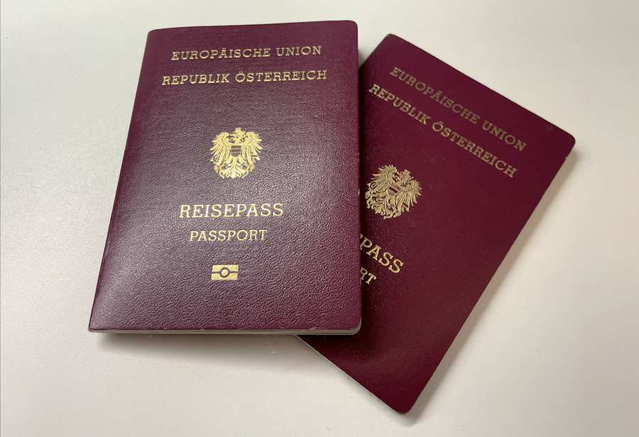

On September 1st, 2020, the amendments to the Citizenship Act, that the Jewish Community of Vienna demanded for more than 20 years, came into force. We are therefore pleased to inform you about the most important points for obtaining the Austrian citizenship.
In summary, all persons who have been persecuted themselves by the Nazis and/or are descendants in direct line to persecuted ancestors (son, daughter, grandson, granddaughter, great-grandson, great-granddaughter, etc.) are entitled to apply for the citizenship. The deadline for the period of eligibility was extended until May 15, 1955. Direct descendants of victims of Nazi persecution who remained citizens of states of the former Austro-Hungarian monarchy are now also entitled to claim the Austrian Citizenship provided that their main residence was in the territory of the Republic of Austria before the Nazi persecution.
Which steps are necessary:
The start of the procedure pursuant to § 58c para. 1a of the Austrian Citizenship Act is the so-called declaration (“Anzeige”) that you can fill in and submit at your local Austrian diplomatic representation (Austrian Embassy or Consulate General) earliest from September 1, 2020.
- People who live abroad, please contact your competent Austrian representative authority (Austrian Embassy or Consulate General) (see: https://www.bmeia.gv.at/en/embassies-consulates/search-for-austrian-representations/). You have the option of filling in an Online Questionnaire in advance directly on the Website (see below).
- Persons who are residents in Vienna should contact the office of the provincial government of Vienna (Municipal Department 35 – Immigration and Citizenship – MA 35 (1200 Wien, Dresdner Strasse 89, email: 80-ref@ma35.wien.gv.at, fax: +43 1 4000 9935110). See https://www.wien.gv.at/english/administration/civilstatus/citizenship/citizenship-ns-victims.html.
- If you live in another province of Austria please contact the responsible office of the provincial government. See https://www.help.gv.at/Portal.Node/hlpd/public/behoerdenbundeslaender.
Submission modalities and procedure of the application:
- Please note that you do not need a lawyer or special legal advice to acquire Austrian citizenship.
- As a first step, please fill in the Online Questionnaire developed by the Ministry of Foreign Affairs and the MA 35 on the homepage of your local Austrian diplomatic representation (Austrian Embassy or Consulate General). The questionnaire and additional information should be available in German, English, Spanish and partly in Hebrew (see https://www.bmeia.gv.at/en/embassies-consulates/search-for-austrian-representations/).
- Please also read carefully the FAQ – Frequently Asked Questions.
- After completing the Online Questionnaire you will receive a notification with your entries and a list of all the documents you need to prove your identity and/or your relationship to the persecuted ancestor.
- When completing the Questionnaire it is important to fill in the exact names, dates and places of birth as well as further details of your direct ancestor(s) which allow the Austrian authorities to locate his/her/their identity in the Austrian registers and archives.
- In a further step the Austrian diplomatic representation (Austrian Embassy or Consulate General) will contact you to advise you on how to file the declaration and to discuss the further procedures with you.
- If you need a diplomatic authentication or an apostille for your personal documents, please contact the competent authority in your home country that issued the document.
- At the request of the authority, documents in non-German or English must be submitted with a German translation by a court-sworn or certified translator.
- If you have copies of original documents from your ancestors, please submit them, too.
- The Austrian diplomatic representation (Austrian Embassy or Consulate General) will forward your declaration (“Anzeige”) together with all the documents submitted to the competent authority in Austria. Then the procedure starts.
- If names, dates of birth or residential addresses of your ancestors are not known, the competent authority in Austria will research the necessary documents and information about your direct ancestors in various archives as far as possible.
- Acquiring Austrian citizenship should not lead to the loss of your previous citizenship in most countries. For legally binding information, please contact the citizenship authority of your home country.
- The competent provincial government in Austria decides on your declaration (“Anzeige”). If anything is unclear, the responsible provincial government will directly get in contact with you.
- As soon as the competent provincial government has approved your declaration, it will issue an official decision (“Bescheid”). This official decision will be delivered to you via the Austrian diplomatic representation (Austrian Embassy or Consulate General). Upon delivery of the decision, you are an Austrian citizen.
- The granting of Austrian citizenship is free of charge. Any other costs for services provided by the authorities in your home country or for translations and diplomatic authentications will remain.
Become a member of the Jewish Community of Vienna:
If you are planning to settle down in Austria after obtaining the Austrian citizenship, we kindly invite you to contact us. We are always happy to welcome new members in Community. Information concerning membership can be found on our Website www.ikg-wien.at.